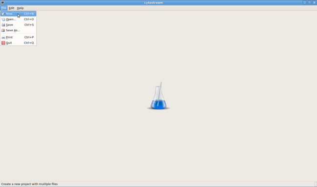
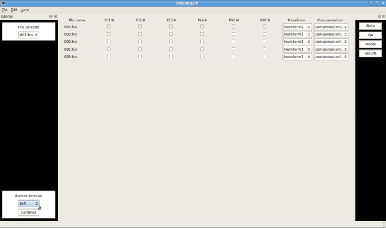
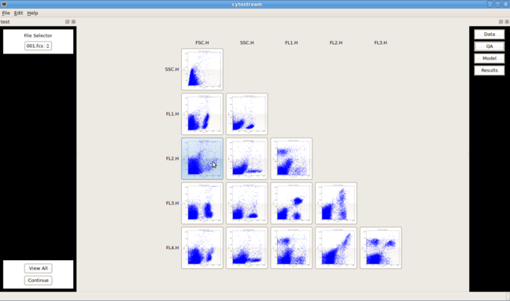
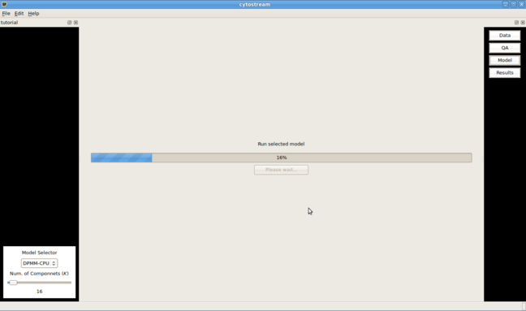

For help with installation see “getting_started”
In the opening screen File -> New or File -> Open are used to open projects.

To begin a project cytostream takes as input *.fcs files. They may be loaded as single files or in bulk using the commands cntl and shift to select more than one file.
Once the file(s) are loaded then a grid of check boxes will appear, where the rows are the files and the columns are the channels.

The check boxes will be used in future releases to carry out compensation and transformations. The Subset Selector is where the user specifies how much of the data will be used throughout the subsequent steps. Given that flow cytometry data often consists of a large number of observations, it can be helpful to carry out analyses on subsets of the data first before using all of the observations. Once the user continues from this stage cytostream will wait for user input to make the figures necessary for quality assurance purposes.
Currently, this stage allows for the browsing of data to enable the user to get a feel for the results before any models are run. More quality assurance options will be included in a later release.

Clicking on an image will bring up an interactive plot of the individual scatter plot. Using the File Selector allows the user browse the different plots associated with the the files in the project. The View All button brings the user back to a thumbnail view of the data plots—effectivly allowing the user to toggle the view.
The model stage is the point where a model may be selected and associated parameters may be changed.

After selecting a model and choosing the appropriate parameters, cytostream will then ask the user to run the model and create the figures.
A given project is automatically saved after the completion of each stage. After completion of the pipeline, users may return to the Data Processing stage to increase the number of observations used as part of the analysis. Similarly, upon return to the Model stage users may change settings and rerun the data as they see fit. The Results Navigation allows the additional option of scrolling through the run models with the Model Selector.